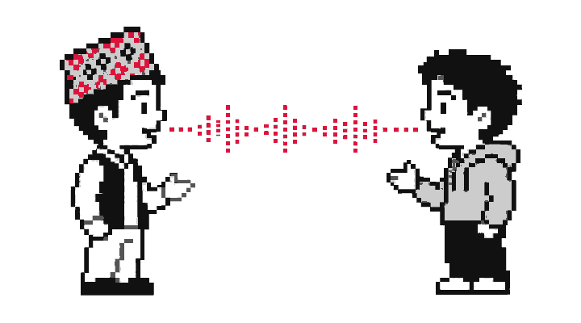
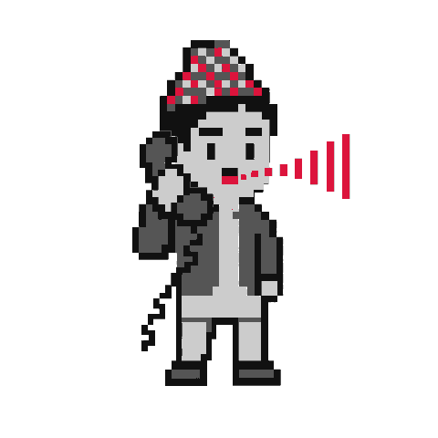

speech recognition for Nepali as it is actually spoken
new research prototype + NepTel, the first public benchmark on real Nepali call audio · github · weights · demo
Read-aloud benchmarks don't survive a real conversation.
Nearly all Nepali speech technology is built and scored on read-aloud recordings. Real Nepali — spontaneous, conversational, code-switched, on noisy 8 kHz lines — is acoustically another language. Whisper-large-v3, zero-shot on real Nepali calls, scores ~96% word error rate: it drifts into Hindi spelling and hallucination loops. nepaliconformer is trained on 1,655 hours of conversation, and measured where it counts.

कुराकानी — the audio we actually care about
75 segments · 2,375 words of real Nepali customer-support calls. References drafted by Chirp 2, then reviewed segment-by-segment by a native speaker. Per-system outputs are published, so every number below can be re-derived.
| system | params | WER ↓ | |
|---|---|---|---|
| nepaliconformer offline (ours) | 121M | 33.8 | |
| Kriti — Naamche Labs | 119M | 40.6 | |
| nepaliconformer streaming (ours, 520 ms) | 121M | 59.9 | |
| MMS-1B — Meta, zero-shot | 965M | 81.0 | |
| IndicWav2Vec — community mirror | 94M | 86.6 | |
| Whisper-large-v3 — zero-shot, tuned | 809M | 96.3 |
NepTel is our benchmark — authorship, the full reference protocol, review statistics, and every known bias are in the provenance. Margin over Kriti: +6.8 WER, 95% CI [+3.8, +9.9], paired bootstrap. Have a Nepali ASR system? Run the scorer, open a PR — we would love to be beaten.

the deployment condition
offline — full-context decoding, 33.8 WER on real calls. The strongest system we measured. weights
streaming — cache-aware, 520 ms lookahead, for live agents. 59.9 WER: it carries a large measured penalty we are actively working down — documented, not hidden. weights
121M-param Conformer, hybrid TDT/CTC, Devanagari SentencePiece. Runs on CPU. Code MIT · weights CC-BY-NC.
Weights are a single 485 MB file. CPU is enough.
offline weights · streaming weights · full instructions
Microphone or file, ≤60 s. Free CPU: a 30-second clip takes ten to twenty seconds.
Found by measurement, shipped with the release — a benchmark you can't trust is worse than none.
Full numbers, instruments, confidence intervals: RESULTS.md
every reference, human-reviewed
© 2026 ampixa labs ||| github · hugging face · sanoTTS